2026-10-02. Starting point: the RAM Connection report anclaje voladizo.pdf (plate 250x351x12, 5 Ø16 anchors, shear key, IPE 240). Site data and lessons from ../cantilever_anchor, ../cantilever_anchor_V2 and ../cantilever_anchor_double_plate. ACI 318-19 (SI, Appendix E), AISC 360-16, AISC Design Guides 1, 4, 16, NEC-SE-DS. LRFD. Run: octave-cli t1_bolted_plate.m; workshop sheets: octave-cli t2_planos_taller.m.
Step-by-step review pages with dimensioned diagrams: end plate, tension anchors and back plate.
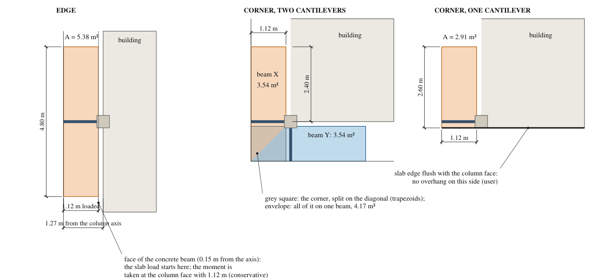
Design: your ETABS model, edge cantilever B16 at the column face: MD = 8.85 kN m, VD = 9.52 kN, ML = 6.34 kN m, VL = 6.80 kN. NEC-SE-DS vertical seismic Ev = (2/3) I η Z Fa = (2/3)(1)(2.48)(0.25)(1.4) = 0.579 D, not in the ETABS combinations. Governing: 1.2D + Ev + L = 1.779 D + L:
Mu = 1.779 × 8.85 + 6.34 = 22.08 kN m (1.2D + 1.6L gives 20.76); 0.9D − Ev = 2.84 kN m stays downward, the moment never reverses.
Cross-check with tributary areas (qD = 2.5, qL = 2 kN/m², L = 1.12 m from the face of the concrete beam): 19.74 kN m. ETABS is higher because it puts the strip of slab over the concrete beam on the cantilever (your note). The ratio 1.118 is applied to every case, so the corners keep the proportions of the tributary areas. Shears stay at the tributary values × 1.118, which are larger than ETABS (39.4 against 23.7 kN at the edge).
| Case | A (m²) | M tributary | Mu design | Vu design | Used by |
|---|---|---|---|---|---|
| Edge | 5.38 | 19.74 | 22.08 | 39.4 | E |
| Corner, 2 beams (trapezoid) | 3.54 | 13.87 | 15.51 | 26.2 | joint checks of the corner |
| Corner, 2 beams (envelope) | 4.17 | 15.38 | 17.20 | 30.7 | CX, CY (each beam) |
| Corner, 1 beam | 2.91 | 10.85 | 12.13 | 21.7 | C1 |
Seismic anchors (ACI 17.10.5): Ev is 22% of the anchor tension, more than 20%, so 17.10.5.3 applies. Option (d) amplifies only Eh by Ωo; the cantilever has no Eh (it is statically determinate, the frame sway does not load it). Concrete cracked everywhere (17.10.5.4); anchor reinforcement per 17.5.2.1, no further reduction (17.10.5.5).
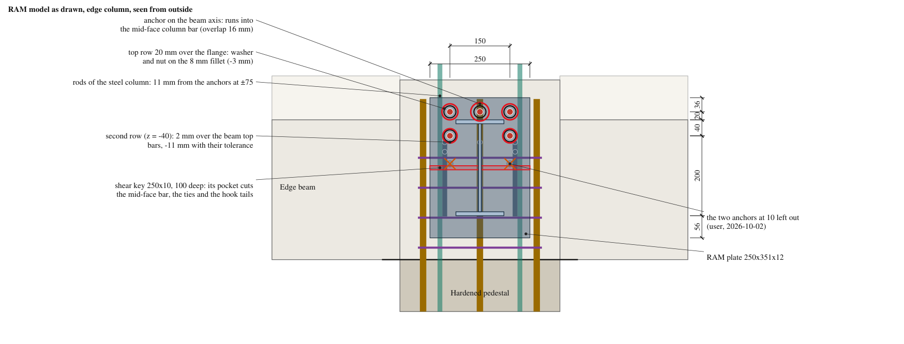
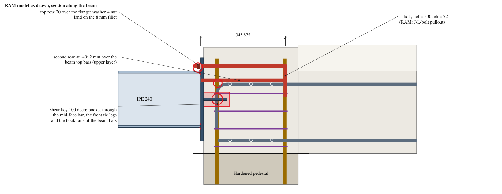
| # | RAM model | On site / in the code | Consequence |
|---|---|---|---|
| 1 | Anchor at v = 0 in the top row | Mid-face column bar at v = 0, u = 58 | Not buildable (overlap 16 mm). With 5 anchors one always sits at v = 0: an even number is needed |
| 2 | Anchors at v = ±75 | Rods of the steel column at v = ±100 | 11 mm clear, less than the placing tolerance |
| 3 | Second row at z = -40 | Beam top bars at z = -56, ±13 mm | 2 mm clear nominal, -11 with the ACI tolerance: clash |
| 4 | Top row 20 mm over the flange | Washer Ø30 plus the 8 mm fillet | Washer on the fillet (-3 mm) |
| 5 | Row spacing 60 mm | 6 da = 96 for torqued cast-in anchors (17.9.2) | Too close |
| 6 | Concrete 860 mm above the top anchors | Pedestal top 80 mm above them | Breakout φNcbg ≈ 37 kN (cracked) against 67 kN in 5 anchors: fails. The beam top bars must carry the pull (17.5.2.1) |
| 7 | Uncracked concrete | Cracked (joint under moment; 17.10.5.4) | Concrete strengths 20 to 30% lower |
| 8 | J/L-bolt pullout, eh = 72: 20.9 kN | Cracked: 14.8 kN < 15.1 kN | Fails even with RAM's loads; the design uses a back plate |
| 9 | Shear key 250x10x100, 100 deep | Its pocket reaches mid-face column bar at u = 58, v = 0; front legs of the joint ties at u = 45; hook tails of the beam bars at u = 44 (v = 0, ±88) | Not buildable, and not needed |
| 10 | Plate 250x351x12 A36: bearing interface 1.04 | Real loads, DG1 3.4.2: m-side 1.71, n-side 2.28 | The strip beyond the flange tips (n = 77) governs; 250 wide does not work in 12 mm |
| 11 | ACI 318-08; 1.5 directional factor on the key welds | ACI 318-19; no 1.5 factor | Updated |
| 12 | Mu 18.72, Vu 17.02 | Mu 22.08, Vu 39.4 (with Ev) | Loads short |
| Piece | Description | Why |
|---|---|---|
| End plate | PL 12x160x350 A36, the same plate for all types: top 85 over the beam top, 25 below the bottom flange; holes drilled to the surveyed anchors (z = +29, CY +45) | Width 160 so that the strips beyond the flange tips work (n = 32); 12 mm is the plate available; one plate so that the shop does not need to know the type |
| Extra plates | 2 pieces PL 12x68x85 A36 on the column side, gap 24 over the rib, fillets 6 on the bottom and inner edges only (shop) | 12 mm alone fails the tension side; each piece is welded over the flange line and the rib line, so its share goes to the same supports |
| Rib | PL 12 on the web line over the top flange, 150 long, 85 high, fillets 6 (site) | Second support for the plate around the anchors |
| Top anchors | 2 threaded rods 5/8"-11 UNC ASTM A193 B7 (commercial, cut to length), L = 473, |v| = 35, z = +29 (CY +45) | Hooks would not fit; straight bars with a back plate |
| Back plate | PL 12x45x120 A36 at u = 364, nuts on both faces | Behind the far column bars and the far ties; deep breakout body |
| Shear anchors | 2 threaded rods 5/8", L = 182, z = -201.2, nut + washer at u = 100 | Compression zone; short, so those of X and Y do not cross |
| Grout pad | 30 mm, commercial non-shrink grout (ASTM C1107), f'g ≥ 28 MPa = 286 kg/cm², e.g. SikaGrout-212 or INTACO Maxibed Grout (18 mm under the extra plates) | The end plate is not cast flush |
| Ties | 2 closed Ø14 at -24 and +10, both under the anchors: the upper one under the B1 front nuts, B1 bears on it; the lower one on the beam top bars | ACI 10.7.6.1.5 (rods of the steel column) |
| Type | Where | Number | Anchors z | End plate | Mu | Vu | T (kN) | Beam in line |
|---|---|---|---|---|---|---|---|---|
| E | edge columns | 1 | +29 | PL 12x160x350 | 22.08 | 39.4 | 81.3 | VCM |
| C1 | corners with one cantilever | 2 | +29 | PL 12x160x350 | 12.13 | 21.7 | 43.0 | VCM |
| CX | corner with two cantilevers, beam X | 1 | +29 | PL 12x160x350 | 17.20 | 30.7 | 62.1 | VCS |
| CY | corner with two cantilevers, beam Y | 1 | +45 | PL 12x160x350 | 17.20 | 30.7 | 58.5 | VCS |
Corner rule: beam Y (the high anchors) is the corner beam whose top bars are on the upper layer; look at the tied cage. Numbers of each type from the first design: to be confirmed.
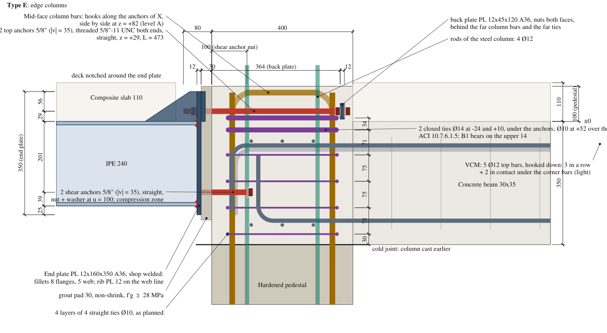
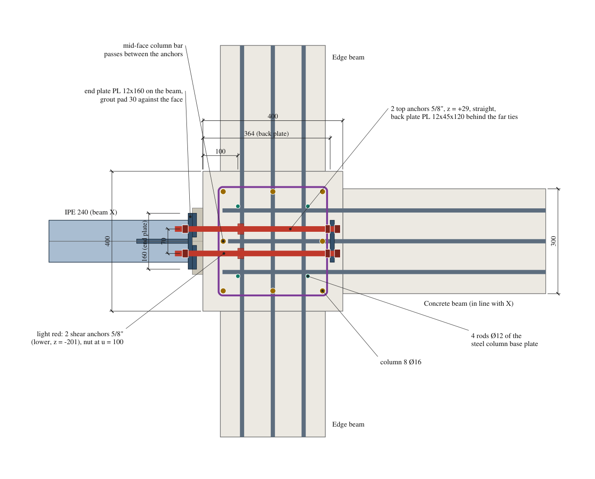
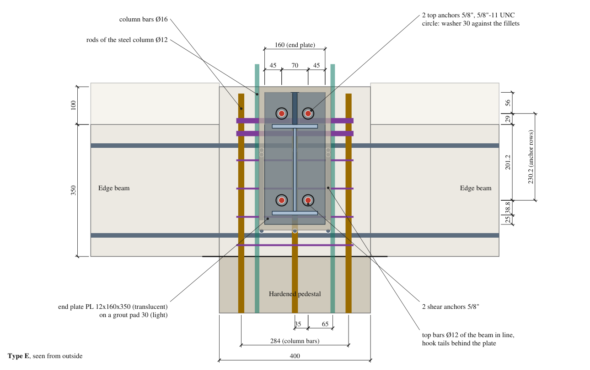
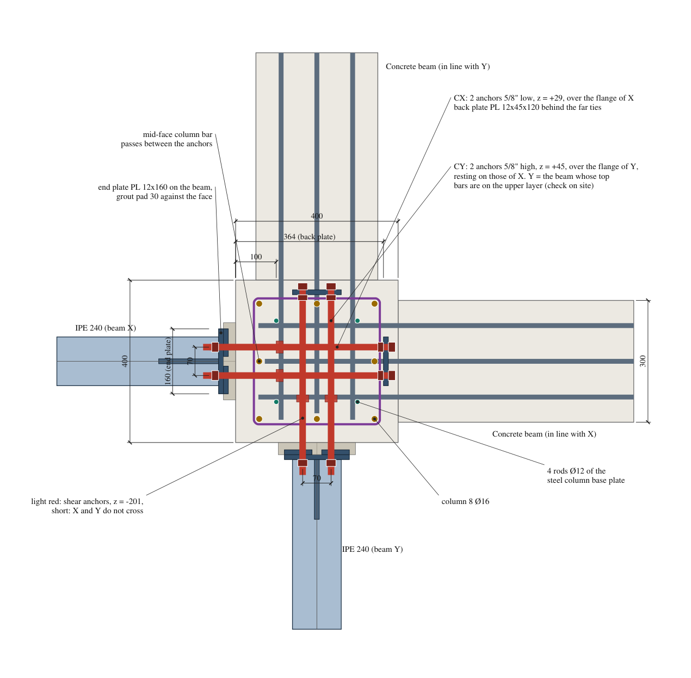
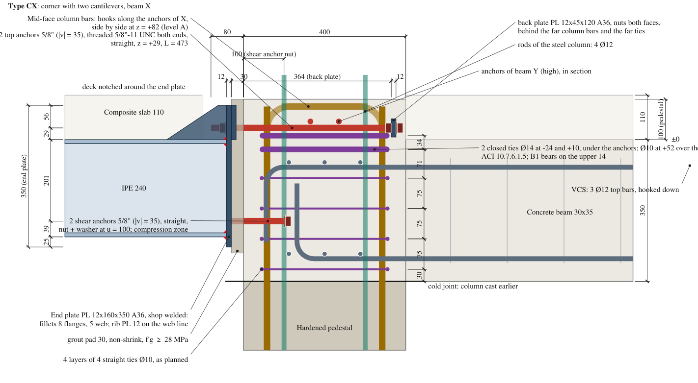
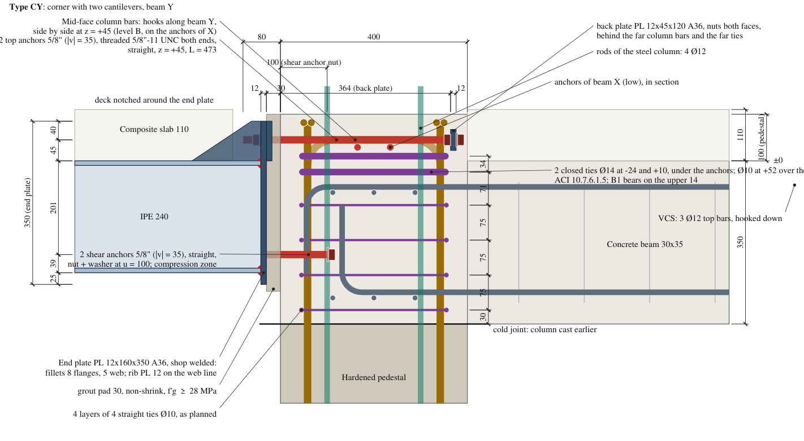
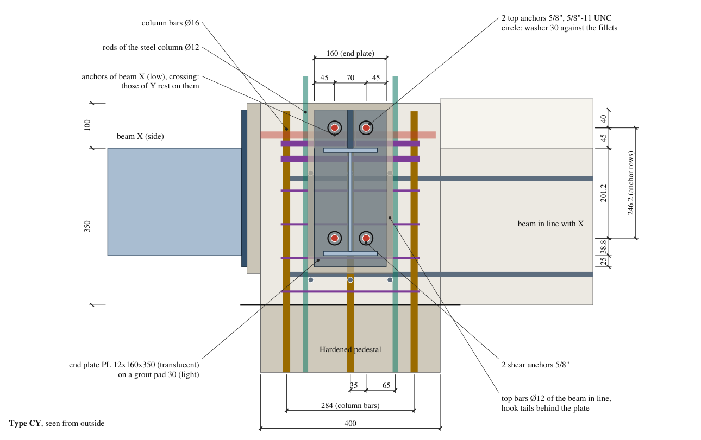
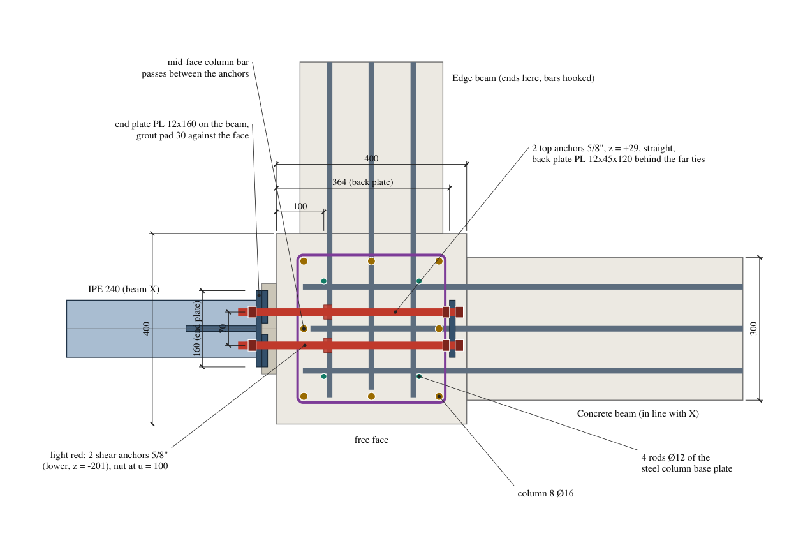
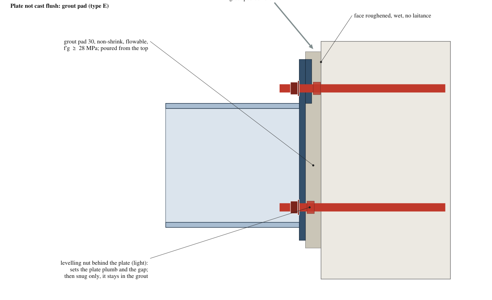
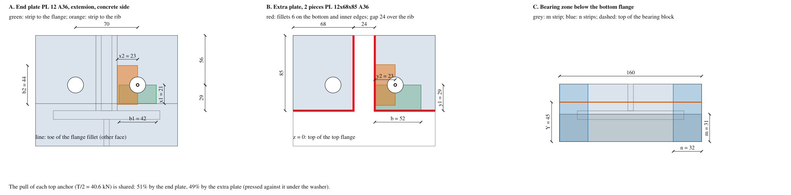
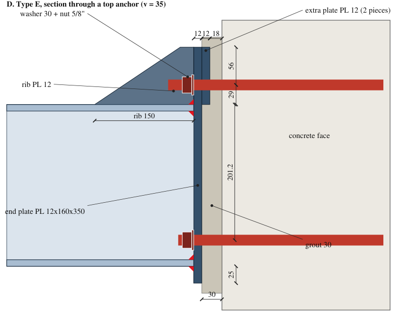
What was tried before this (real loads, type E):
| End plate | Tension side | Result |
|---|---|---|
| Your plate 250x351x12 A36 | - | Bearing strip beyond the flange tips 2.28: fails |
| 160 wide, 12 mm A36, rib, no extra plate | 1.29 | Fails |
| 160 wide, 12 mm A36, extra plate, no rib | 1.33 | Fails: the rib is the second support |
| 160 wide, 12 mm A36, rib + extra plate (design) | 0.66 | Passes |
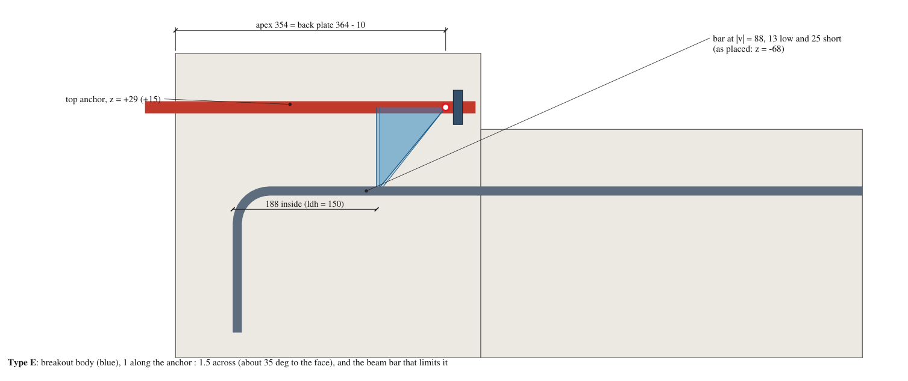
Green ≤ 0.85, yellow ≤ 1.0, red > 1.0; grey: information only, not relied upon. Last column: the check of type E written out.
| Group | Limit state | Reference | E | C1 | CX | CY | Demand / capacity, E | Check, type E |
|---|---|---|---|---|---|---|---|---|
| Anchors | Top anchor, steel in tension (5/8"-11 UNC ASTM A193 B7) | 17.6.1.2 | 0.43 | 0.23 | 0.33 | 0.31 | 40.6 / 94.2 kN | φNsa = 0.75 Ase futa = 0.75 (146)(860) = 94.2 kN; Nua = T/2 |
| Anchors | Thread stripping of the rod inside the nut (14 high) | FED-STD-H28 | 0.32 | 0.17 | 0.24 | 0.23 | 40.6 / 127.7 kN | As = π n Le D1,max [1/(2n) + 0.577 (d2,min − D1,max)] = 330 mm², Le = 13; φN = 0.75 (0.6 futa) As = 127.7 kN. Stripping 170 kN > rod rupture Ase futa = 126 kN: the rod breaks first (nut grade 8 or A194 2H) |
| Anchors | Shear anchor, steel (gravity + torsion), grout pad | 17.7.1.2(b), 17.7.1.2.1 | 0.50 | 0.28 | 0.39 | 0.39 | 19.8 / 39.2 kN | φVsa = 0.80 (0.65)(0.6 Ase futa) = 39.2 kN; Vua = √[(V/2)² + (H/2)²] |
| Anchors | Top anchor, tension + shear if all 4 bear (interaction) | 17.8.3 | 0.57 | 0.31 | 0.44 | 0.42 | 0.69 / 1.20 | Nua/φNn + Vua/φVn ≤ 1.2, Vua = √[(V/4)² + (H/2)²] = 9.9 kN |
| Anchors | Pullout at the back plate (per anchor) | 17.6.3.2.2(a) | 0.14 | 0.08 | 0.11 | 0.10 | 40.6 / 282.0 kN | φNpn = 0.70 (8 Abrg f'c), Abrg = (45x120 - 2 holes)/2 = 2446 mm²: 282 kN |
| Anchors | Side-face blowout of the back plate towards the pedestal top (group) | 17.6.4.1, 17.6.4.2 | 0.58 | 0.31 | 0.44 | 0.43 | 81.3 / 140.3 kN | hef = 364 > 2.5 ca1, ca1 = 71: Nsb = 13 ca1 √Abrg √f'c (x (1 + ca2/ca1)/4 when ca2 < 3ca1), group (1 + s/6ca1); φ = 0.70 |
| Concrete | Shear across z = 0 (pedestal above the beam top): shear friction with the U-bars | 22.9.4.2 | 0.41 | 0.22 | 0.43 | 0.43 | 81.3 / 199.5 kN | 2 U-bars Ø12 over the A1 (4 legs, Avf = 452 mm²): φVn = 0.75 (1.4) Avf fy = 200 kN; D4: X and Y together |
| Anchors | Back plate bending between the anchors (full section) | AISC F11 | 0.56 | 0.30 | 0.43 | 0.40 | 0.2 / 0.4 kN m | M = R s/2 − w b²/8 = 0.203 kN m (does not depend on how the nut spreads its push); φMp = 0.9 Fy h t²/4 = 0.362 kN m |
| Anchors | Back plate through the hole: bending + shear (net section) | AISC F11, J4.2 | 0.40 | 0.21 | 0.30 | 0.29 | 0.1 / 0.2 kN m | worst cut through the hole at 37.4 from the centre: net width 27.7, M = 0.088 kN m, V = 1.9 kN; φMp,net (1 − (V/Vp)²) = 0.222 kN m |
| Anchors | Back plate shear rupture through the hole | AISC J4.2(b) | 0.21 | 0.11 | 0.16 | 0.15 | 12.0 / 58.3 kN | φRn = 0.75 × 0.6 Fu (h − dh) t = 58.3 kN |
| Anchors | Pryout of the 2 shear anchors | 17.7.3 | 0.50 | 0.28 | 0.39 | 0.39 | 39.5 / 78.4 kN | φVcpg = 0.70 kcp Ncbg, kcp = 2, hef = 100, kc = 10, cracked: Ncbg = 56.0 kN; Vu = √(V² + H²) on the group |
| Anchors | Shear breakout of the shear anchors towards a side face, case 1 (near anchor) | 17.7.2, R17.7.2.1 | 0.43 | 0.23 | 0.33 | 0.33 | 0.43 / 1.00 | near anchor, ca1 = 165: √[(H/2 / φVcb)² + (V/2 / 2φVcb)²], φVcb = 23.3 kN (⊥ edge), 46.5 kN (∥ edge) |
| Anchors | Shear breakout of the shear anchors towards a side face, case 2 (far anchor) | 17.7.2, R17.7.2.1 | 0.54 | 0.30 | 0.42 | 0.42 | 0.54 / 1.00 | far anchor takes all, ca1 = 235: √[(H / φVcbg)² + (V / 2φVcbg)²], φVcbg = 35.1 kN (⊥), 73.3 kN (∥) |
| Concrete | Unreinforced breakout of the 2 top anchors (why anchor reinforcement) | 17.6.2 | 3.09 | 1.63 | 2.36 | 2.47 | 81.3 / 26.3 kN | top of the pedestal 71 mm over the anchors, sides at 165: h'ef = 110 (17.6.2.1.2), φNcbg = 26.3 kN. Not relied upon |
| Concrete | Anchor reinforcement: top bars of the beam in line, steel | 17.5.2.1(a), Table 17.5.3 | 0.76 | 0.60 | 0.58 | 0.82 | 81.3 / 106.9 kN | φN = 0.75 n As fy = 0.75 (n)(113)(420); n = 3 / 2 / 3 / 2 bars counted (E counts the centre bar too, hooked at u = 66) |
| Concrete | Anchor reinforcement: beam bars inside the breakout body (tolerances against) | 17.5.2.1(a), 25.4.3 | 0.85 | 0.80 | 0.85 | 0.81 | 150.0 / 176.5 mm | ldh(Ø12) = 150; available 176 (nominal 229): apex at the back plate (u = 364), beam bars 13 low and 25 short, anchors 15 high, back plate 10 short |
| Concrete | Anchor reinforcement within 0.5 hef of the anchors | R17.5.2.1 | 0.61 | 0.61 | 0.61 | 0.63 | 110.5 / 182.0 mm | farthest counted bar 111 mm from an anchor; 0.5 hef = 182 |
| Concrete | Stress test: beam top bars as hooked anchors (no bond) | 17.6.3.2.2(b) | 3.22 | 2.56 | 2.46 | 3.48 | 81.3 / 25.2 kN | φNp = 0.70 × 0.9 f'c (4.5 db) db = 8.4 kN per Ø12; 3 / 2 / 3 / 2 bars |
| Concrete | Stress test: beam bars + column ties as hooked anchors (no bond) | 17.6.3.2.2(b) | 0.93 | 0.69 | 0.87 | 0.74 | 81.3 / 87.8 kN | + 2 extra beam bars (C4, D4-south), 4 legs Ø14 (11.4 kN each), 0 / 0 / 0 / 0 legs Ø10 at -95 (5.8 kN each) |
| Concrete | Anchor reinforcement developed beyond the body | 25.4.2.3 | 0.69 | 0.69 | 0.69 | 0.69 | 687.5 / 1000.0 mm | ld = fy ψt db/(2.1 √f'c) = 688; the bars continue into the beam span (1000 is only a marker) |
| End plate | Tension side: end plate PL 12 + extra plate PL 12 (A36), strips to flange and rib | lower bound (strip), DG1 3.4.3 | 0.66 | 0.35 | 0.50 | 0.52 | 5.3 / 8.0 kN m/m | end plate: x1 = 21 / b1 = 42, x2 = 23 / b2 = 44; extra plate: y1 = 29 / b = 52, y2 = 23 / b = 46; 51% of Ta = 40.6 kN in the end plate: m = 5.27 kN m/m; φmp = 8.04 |
| End plate | Extra plate: edge welds on the flange and rib lines (one piece) | AISC J2.4 | 0.14 | 0.08 | 0.11 | 0.10 | 20.0 / 141.1 kN | pull in the extra plate (1 - 0.51) Ta = 20.0 kN; fillet 6 over 153 mm: φR = 141 kN |
| End plate | Yield lines with the rib (upper bound) | DG4 4ES, outer bolts only | 0.51 | 0.28 | 0.40 | 0.41 | 22.1 / 43.4 kN m | Yp = bp/2 h0 (1/s + 1/(2pf)) + (2/g) h0 (de + pf): E 1352 mm, CY 1309 mm |
| End plate | Rib-to-end-plate fillets (strip reaction of both anchors) | AISC J2.4 | 0.16 | 0.08 | 0.12 | 0.13 | 20.2 / 129.1 kN | R = 2 (1 - 0.51)(0.51) Ta = 20.2 kN; φR = 0.75 (0.6)(483)(0.707)(6)(2 x 70) = 129 kN |
| End plate | Rib-to-flange fillets | AISC J2.4 | 0.08 | 0.04 | 0.06 | 0.07 | 20.2 / 243.8 kN | rib 147 long on the flange (hst/tan 30°): φR = 244 kN |
| End plate | Rib: thickness | DG4 4ES | 0.52 | 0.52 | 0.52 | 0.52 | 6.2 / 12.0 mm | ts ≥ tw Fyb/Fys = 6.2; length along the flange ≥ hst/tan 30° (E 147, CY 147 mm) |
| End plate | Tension side without the rib, full width | DG1 3.4.3, Eq. 3.4.5a | 2.14 | 1.13 | 1.64 | 2.27 | 17.2 / 8.0 kN m/m | Mpl = T x/B, x = pf + tf/2 = 33.9: 17.22 kN m/m |
| End plate | Bearing side, strip below the bottom flange (m) | DG1 3.4.2 | 0.68 | 0.64 | 0.68 | 0.68 | 5.5 / 8.0 kN m/m | fp = 11.4 MPa, Y = 44.6, m = 31: Mpl = 5.47 kN m/m (fp m²/2 if Y ≥ m, else fp Y (m - Y/2)) |
| End plate | Bearing side, strip beyond the flange tips (n) | DG1 3.4.2 (n for m) | 0.73 | 0.68 | 0.73 | 0.73 | 5.8 / 8.0 kN m/m | n = (B - 0.8 bf)/2 = (160 - 0.8 x 120)/2 = 32: Mpl = 5.83 kN m/m |
| End plate | Tension side, RAM's 45° strips per anchor, no rib | DG1 Fig. 3.1.1 | 2.53 | 1.34 | 1.93 | 1.82 | 20.3 / 8.0 kN m/m | beff = 2 x per anchor: Mpl = (T/2) x/(2x) = T/4 per mm; ignores the rib |
| End plate | No prying (AISC Manual): t ≥ tmin | AISC Manual Eq. 9-20a | 0.67 | 0.49 | 0.59 | 0.57 | 11.5 / 17.0 mm | tmin = √[4 Ta b'/(φ p Fu)], b' = 21.0625, p = 72.5: 11.5 mm; teff = √(t1² + t2²) = 17.0 |
| End plate | No prying, strict: 1.11 m ≤ φmp on the strip moment | DG16 2.2 (thick plate) | 0.73 | 0.39 | 0.56 | 0.58 | 5.9 / 8.0 kN m/m | the plate stays elastic at 1/1.11 of the strip demand |
| End plate | Fillet, tension flange to end plate (site) | AISC J2.4 | 0.33 | 0.18 | 0.26 | 0.26 | 95.9 / 287.4 kN | Ff = Mu/(h - tf); φR = 0.75 (0.6)(483)(0.707)(8)(234) = 287 kN, no 1.5 factor |
| End plate | Fillets, web to end plate (shear, site) | AISC J2.4 | 0.12 | 0.06 | 0.09 | 0.09 | 39.4 / 338.7 kN | φR = 0.75 (0.6)(483)(0.707)(5)(2 x 220) = 339 kN |
| End plate | Bearing of a shear anchor on the end plate | AISC J3.10 | 0.14 | 0.08 | 0.11 | 0.11 | 19.8 / 137.2 kN | φR = 0.75 (2.4 d t Fu) = 137 kN |
| End plate | Bearing stress on the concrete face (grout pad) | DG1 3.1.1, ACI 22.8.3.2 | 0.92 | 0.92 | 0.92 | 0.92 | 11.4 / 12.4 MPa | used fp = 0.65 (0.85 f'c) = 11.4 MPa; allowed with √(A2/A1) = 1.09: 12.4 MPa. Grout f'g ≥ 28 MPa |
| End plate | Bearing side at fp,max with √(A2/A1): m and n strips (strict) | DG1 3.4.2 | 0.79 | 0.71 | 0.79 | 0.78 | 6.3 / 8.0 kN m/m | fp = 12.4 MPa, Y = 40.8: m strip 5.94, n strip 6.32 kN m/m |
| Beam | IPE 240 flexure, LTB with Lb = 2.5 L (tip free, load on top) | AISC F2.2 | 0.32 | 0.18 | 0.25 | 0.25 | 22.1 / 68.8 kN m | Lb = 2.5 (1120) = 2800 mm, Cb = 1: φMn = 68.8 kN m (φMp = 81.9) |
| Beam | IPE 240 shear | AISC G2.1 | 0.18 | 0.10 | 0.14 | 0.14 | 39.4 / 221.4 kN | φVn = 1.0 (0.6 Fy d tw) = 221 kN |
| Beam | Tip deflection under D + L (beam only) | NEC, L/180 for cantilevers | 0.09 | 0.05 | 0.07 | 0.05 | 0.6 / 6.2 mm | δ = w L4/(8 E I) = 0.6 mm; plus the rotation of the connection |
| Joint | Joint shear (the pull T crosses the joint) | 15.4.2.3 | 0.12 | 0.08 | 0.11 | 0.11 | 81.3 / 680.7 kN | φVn = 0.75 (1.25) √f'c Aj = 681 kN, Aj = 400² |
| Joint | Concrete beam in line (ETABS, with the cantilever) + Ev of the cantilever | 22.2 | 0.63 | 0.63 | 0.54 | 0.68 | 46.1 / 72.9 kN m | Mu = ETABS M- at the face + Ev share (E: B6 max(35.3, 38.8 + 7.3) = 46.1); C1 B4 30.0, CX grid 4 24.3 (user). Bars: C4 5 + 2 bastones, C1 5, CX 3 + 2 bastones, CY 5; φMn = 0.9 As fy (d - a/2): 72.9 / 54.4 / 55.4 / 54.4 kN m |
| Joint | Top bars at the face: T + M/jd (upper bound, the cantilever counted twice) | 22.2, 17.5.2.1 | 0.90 | 0.83 | 0.83 | 0.95 | 270.7 / 299.3 kN | T + Mu/(d - a/2) ≤ 0.9 As fy; E: 81.3 + 189.4 = 270.7 kN; capacity 299 kN |
| Joint | Same, counting only the 3 bars of the top line (the 2 in contact under them are a hooked bundle, R25.6.1.5) | 22.2, R25.6.1.5 | 1.34 | 0.99 | 0.87 | 1.07 | 46.1 / 34.4 kN m | 3 Ø12, d = 282: φMn = 34.4 kN m. Your beam design: check, or separate the stacked bars at their hooks |
| Joint | Pedestal shear if all of T went into the pedestal | 22.5 | 0.42 | 0.22 | 0.32 | 0.30 | 81.3 / 192.0 kN | φVn = 0.75 (0.17 √f'c b d + Av fyt d/s) = 192 kN |
| Anchors | Top anchors, concrete in shear: torsion couple H (V on the shear anchors) | 17.7.2, 17.7.3 | 0.14 | 0.07 | 0.11 | 0.10 | 0.14 / 1.00 | largest of: breakout to a side face, case 1 (H/2, ca1 = 165) and case 2 (H, ca1 = 235), top of the pedestal 71 above (ψed,V, AVc cut); pryout 2 Ncbg (cone cut by the top); steel |
| Anchors | Top anchors, tension + shear (H): interaction | 17.8 | 0.58 | 0.40 | 0.44 | 0.55 | 0.58 / 1.00 | N/φNn (largest tension ratio: steel, pullout, blowout, anchor reinforcement steel with every beam bar still developed inside the body) + V/φVn ≤ 1.2 (shown /1.2); either alone when the other is ≤ 0.2 |
| Anchors | Top anchors, tension + shear if all 4 holes bear (V/4 each): interaction | 17.8 | 0.83 | 0.53 | 0.64 | 0.74 | 0.83 / 1.00 | if exceeded, the concrete at the top anchors cracks and their share of V moves to the shear anchors (designed for all of V, as in case 2 of R17.7.2.1); H stays |
| Concrete | Beam bottom bars: hook developed in the joint (from the far face) | 25.4.3 | 0.55 | 0.55 | 0.55 | 0.55 | 150.0 / 274.0 mm | ldh(Ø12) = 150; available 274 (outside of the hooks at 126 from the cantilever face) |
| Concrete | Beam bottom bars: positive moment near the joint, 2 hooked bars only (ETABS) | 9.5, 22.2, 18.3.2 | 0.15 | 0.28 | 0.27 | 0.28 | 3.5 / 23.3 kN m | ETABS, 0.5 m from the face, taken at the face; φMn = 0.9 As fy(d - a/2), 2 Ø12, d = 282, a = 18.1: 23.3 kN m |
Shear: the shear anchors are checked carrying all of Vu, and the top anchors as if all four holes bore at once; both pass. Concrete in shear (anchor check page, section 8): no breakout downward, the column continues below; pryout behind the shear anchors; breakout towards a side face under the torsion couple, with the vertical shear parallel to that face. Torsion at the corners: Tu = Vu bf/2 (edge: half), a horizontal couple between top and shear anchors. All welds are taken as site welds (AISC J2.4, E70, no directional factor).
| Type | Design Mu | Largest Mu | Ratio | Limited by |
|---|---|---|---|---|
| E | 22.08 | 29.0 | 1.31 | Top bars at the face: T + M/jd (upper bound, the cantilever counted twice) |
| C1 | 12.13 | 21.8 | 1.80 | Top bars at the face: T + M/jd (upper bound, the cantilever counted twice) |
| CX | 17.20 | 26.2 | 1.52 | Top bars at the face: T + M/jd (upper bound, the cantilever counted twice) |
| CY | 17.20 | 20.0 | 1.16 | Top bars at the face: T + M/jd (upper bound, the cantilever counted twice) |
All forces scaled together until the first check reaches 1.0 (information rows and the concrete beam in line left out). Without the strict no-prying criterion: 29.0 / 20.0 kN m.
It would act as template and bearing surface (no grout on a vertical face) and remove the 0.80 factor on the shear anchors. The end plate, anchors and back plate keep their dimensions; the anchors stick out 30 mm less. It gives no room in level with a bolted beam; only a beam welded to an embedded plate absorbs level errors of 1 to 2 cm.
Not better: the rods become through-bolts, outside ACI chapter 17 (17.1.5); the plate would bear on the 40 mm cover outside the ties and stay exposed until the slab is cast. A larger back plate only helps checks that already have room.
Not needed: the shear anchors take Vu (D/C 0.50). Keys beside the centre bar would be limited to about 35 mm deep by the tie layers and the hook tails of the beam bars.
The IPE 200 itself passes, but its shorter lever arm raises the pull on the anchors from 81 to about 97 kN and its narrower flange makes the bearing strip beyond the flange tips fail (about 1.13). A composite section does not help a cantilever: the slab is in tension, and the anchors take the couple at the column face whatever the slab does. IPE 240, not composite.
Yes, at E, CX and CY. Without the extra plates the tension side is at 1.29 / 0.68 / 0.99 / 1.11 (E / C1 / CX / CY); without the rib (with the extra plates) at 1.33 / 0.71 / 1.02 / 1.33. C1 would pass without the extra plates; they are used everywhere so that there is one detail.
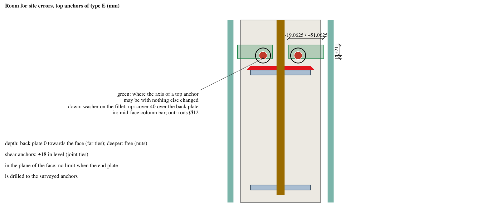
| Item | Direction | Room (mm) | Limited by |
|---|---|---|---|
| Top anchors | lower (z) | 6 | washer on the flange fillet; the tie 14 under the B1 nuts (+10) goes down with them |
| Top anchors E, C1, CX | higher (z) | 21 | level B rides on them; level A over it, its top cover 10 down to 10 |
| Top anchors CY | lower (z) | 0 | resting on the anchors of X and the level-B hooks |
| Top anchors CY | higher (z) | 1 | front nuts under the tie 10 at +63 |
| Top anchors CX (D4) | higher (z) | 0 | the anchors of Y rest on them |
| Top anchors | towards the axis (v) | 19 | mid-face column bar |
| Top anchors | away from the axis (v) | 51 | rods of the steel column; the strip check is redone beyond 10 |
| Back plate | towards the face (u) | 0 | against the ties 14 |
| Back plate | deeper (u) | free | free (nuts); the bar ends may reach into the slab zone |
| Shear anchors | up or down (z) | 18 | joint ties at -170 / -245 (ties can be moved) |
| Shear anchors | lower (z) | 6 | washer reaches the bottom flange fillet |
| Any anchor | in the plane of the face | free | none if the end plate is drilled to the surveyed anchors |
| Beam bars (anchor reinforcement) | level and ends | - | already in the checks: 13 low, 25 short (ACI 26.6.2.1) |
The level of the top anchors is the tight direction. Hold points: template level and anchor positions before the pour; at the corner, beam Y = the beam with its top bars on the upper layer, the column hooks placed after the A1 + B1 assemblies, level A resting on the A1 and the B1 front nuts (E, C1, CX) and tied to them; beam corner bars at ±88 in the joint, tied to the rods of the steel column; survey after stripping; grout full under the bottom flange.
| Between | mm | Note |
|---|---|---|
| Anchors - mid-face column bars (front and far) | 19 | all types |
| Anchors - rods of the steel column (v = 100) | 51 | all types |
| Rods of the steel column (+-100) - beam corner bars (+-88 in the joint), both beams, top and bottom | 0 | in contact: pushed 6 mm in from +-94 (the beam), slope about 1:25 |
| Rods of the steel column - inner face of the column ties | 44 | room for the pour beside the rod + beam bar pair (rods at +-112 instead: 6 to the beam bars, 32 here) |
| Rods of the steel column - bottom-hook tails (u = 132, v = 88) | 22 | |
| Level-B hooks (side mid bars, across) - top anchors under them | 0 | resting on them (E, C1, CX; D4: north and south mid bars on the anchors of X) |
| Level-A hooks (along the anchors) - level-B hooks under them, where they cross | 21 | |
| Column hooks of level A - top of the pedestal (cover) | 10 | ACI Table 20.5.1.3.1: 40; 10 by the user (base plate grout and slab on top) |
| D4: level-A hooks - anchors of Y, where they cross | 21 | |
| D4: level-A hook (north corner, u = 350 from the south face) - front nuts of the Y back plate | 15 | over them |
| D4: level-B hooks (v = 8) - anchors of Y beside them | 11 | |
| Corner: anchors of X - anchors of Y, where they cross | 0 | Y resting on X |
| Anchors of Y - top of the pedestal | 47 | under the base plate of the steel column |
| Far-face column bars: straight part above the tie 14 under the anchors (+10) | 16 | level-A bends start at +26: the tie bears on the straight bars |
| Tie 14 under the anchors (+10) - front nuts of B1 (a flat down) | 0 | right under them (E, C1, CX) |
| Tie 14 under the anchors (+10) - top anchors | 4 | |
| B1 face - back leg of the ties 14 | 0 | in contact (E, C1, CX) |
| B1 bottom edge - contact line with the tie 14 under the anchors (its axis) | 4 | B1 of E, C1, CX |
| Tie 10 over the anchors (+52) - front nuts of B1 (flats up) | 6 | E, C1, CX |
| Tie 10 over the anchors (+52) - level-A hooks over it | 17 | where the tails cross its legs |
| Tie 10 over the anchors (+52) - bars in the level-A bend (plan gap) | 6 | bends start at +26; at 20 cover the gap is 13 |
| D4: tie 10 over the anchors (+63) - front nuts of the Y back plate (flats up) | 1 | |
| D4: tie 10 over the anchors (+63) - level-A hooks over it | 6 | |
| U-bars over the A1 (shear across z = 0): legs (v = 60) - A1 | 11 | |
| U-bars: legs - bastones beside them (v = 76, at -80) | 4 | |
| U-bars: crown - level-A hooks over it | 6 | |
| U-bars: legs (u) - front nuts of B1 | 14 | |
| U-bars: legs - rods of the steel column (u = 300, v = 100) | 38 | |
| Ties 14: clear between the two | 20 | room for the concrete |
| Lower tie 14 (-24) - beam top bars (upper layer) | 19 | |
| Ties 14 - top of the pedestal (lowest) | 124 | ACI 10.7.6.1.5: both within 127 of the top |
| Back plate - outer face of the far ties | 4 | the back plate is behind the far ties |
| Front nut on the back plate (corners) - far mid-face column bar (v = 0) | 13 | side by side, same depth |
| Back plate of E, C1, CX - top of the pedestal | 48 | cover; the slab is cast against it later |
| Back plate of CY - top of the pedestal | 32 | under the base plate grout of the steel column |
| End of the tension anchors - far face of the column | 7 | above the beam top the slab covers it later |
| Corner: back plate of X - anchors of Y | 121 | no conflict |
| Shear anchors - joint ties at -170 and -245 | 18 | |
| Lowest joint tie - bottom bars of the crossing beam (above it) | 15 | |
| Shear anchors - hook tails of the beam bars (v = 0) | 21 | at u = 50 |
| Corner: end nut of the shear anchors of X - shear anchors of Y | 25 | they do not cross (short) |
| Washer under the nut - fillet of the top flange | 6 | washer OD 30 |
| Washer under the nut - fillet of the bottom flange | 6 | |
| Washer under the nut - web fillet | 12 | |
| Washer under the nut - rib fillet | 8 | |
| Hole to the plate top edge (AISC Table J3.4M: 22) | 40 | type CY; E, C1, CX: more |
| Top line (3 bars) with the bastones in the second layer, clear | 76 | pour: was 32 with the bastones in the top line |
| Bastón - the -80 bar beside it, in the span | 0 | in contact: a 2-bar bundle (ACI 25.6.1) |
| Bastón hook tail - tail of the -80 bar beside it (staggered) | 8 | tails at u = 68 and 84 |
| Bastón hook tail - shear anchors A2 (v = 35) | 27 | the tail passes beside the A2 |
| Bastón hook tail - bottom-hook tails (u = 132, v = 88) | 37 | |
| Bastón (-80) - crossing beam top bars (-68) above it | 0 | resting under them, as the -80 bars |
| D3, D4X: bastón (-68) - corner bar beside it | 0 | in contact: a 2-bar bundle |
| D3, D4X: bastón hook tail - crossing -80 bars of grid D (u = 112) | 16 | the tail passes in front of them |
| Bottom hooks - bend of the 2 extra top bars (-80) | 4 | tail top at -96; corner bars (v = 88) |
| Bottom hooks - top bars of the beam in line (bend and tail) | 16 | |
| Bottom hooks on the upper layer (-282) - crossing bottom bars below (u = 288 200 112 ) | 0 | E, C1, D3; D4 grid D. 0 = resting on them |
| D4: grid-4 bottom hooks on the lower layer (-294) - grid-D bottom bars above | 0 | no bar of grid D crosses the bends |
| Bottom-hook tails - crossing top bars at u = 112 | 22 | |
| End nut of A2 - bottom-hook tail at v = 88 | 34 | nut at u = 103..117, tail at u = 132 |
| D4 plan at A2: closest two vertical bars (other than tails in contact) | 16 | grid-4 bottom tail - grid-D bottom tail |
| D4: south A2 (x = 35) - grid-4 bottom tails | 19 |
With the back plate, this design uses the same holes through the joint, the same anchor reinforcement and the same anchor levels as the double plate. What is left is the face: a flush front plate (template, steel-on-steel bearing; kept flush and vented during the pour) against a grout pad (nothing embedded at the face; grouting on a vertical face, survey and drilling). The double plate's PL 20 end plate is not available either: it would need this same 12 mm plate with rib and extra plates, and its checks redone with the ETABS loads. Rods: B7 there, threaded rod B7 here too.